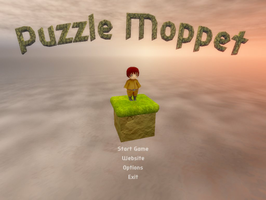
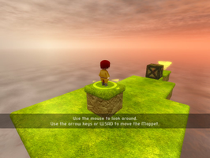
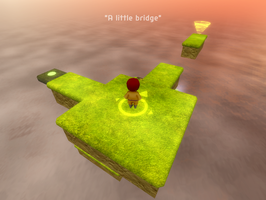
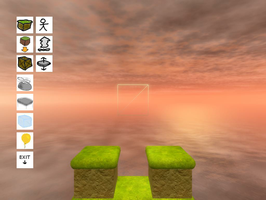
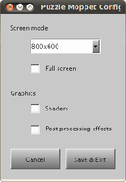

Puzzle Moppet
Dieser Artikel wurde für die folgenden Ubuntu-Versionen getestet:
Ubuntu 16.04 Xenial Xerus
Zum Verständnis dieses Artikels sind folgende Seiten hilfreich:
Puzzle Moppet  ist ein 3D-Puzzlespiel, welches die Irrlicht Engine verwendet. Das Spielprinzip ist an Sokoban angelehnt. Man dirigiert den Charakter Moppet durch das Level zum Luftwirbel. Hier gilt es jedoch Hindernisse und Gefahren zu meistern. Man benötigt räumliches Vorstellungsvermögen und taktisches Denken um die Level zu lösen. Der Schwierigkeitsgrad steigt unnachgiebig...
ist ein 3D-Puzzlespiel, welches die Irrlicht Engine verwendet. Das Spielprinzip ist an Sokoban angelehnt. Man dirigiert den Charakter Moppet durch das Level zum Luftwirbel. Hier gilt es jedoch Hindernisse und Gefahren zu meistern. Man benötigt räumliches Vorstellungsvermögen und taktisches Denken um die Level zu lösen. Der Schwierigkeitsgrad steigt unnachgiebig...
Mit dem Leveleditor können neue Rätsel erschaffen werden.
|  |  |  |
| Menü | Tutorial | Spielszene |
Installation¶
Entwicklerseite¶
Das Spiel von garnetgames.com  (Mirror ) herunterladen. Das Archiv PuzzleMoppetFull.tar.gz entpacken [1] und den Ordner PuzzleGameFullVersion in das gewünschte Zielverzeichnis kopieren - z.B. ~/Spiele. Um das Spiel zu starten [2] ruft man im Spieleverzeichnis
(Mirror ) herunterladen. Das Archiv PuzzleMoppetFull.tar.gz entpacken [1] und den Ordner PuzzleGameFullVersion in das gewünschte Zielverzeichnis kopieren - z.B. ~/Spiele. Um das Spiel zu starten [2] ruft man im Spieleverzeichnis PuzzelGame aus dem Unterordner bin auf.
Auf Wunsch kann ein Menüeintrag [3] vorgenommen werden.
Desura¶
Das Spiel kann über die Internetseite oder den Client zur Spieleliste hinzugefügt und gestartet werden [4].
Ubuntu Software-Center¶
Puzzle Moppet kann über das Software-Center hinzugefügt werden.
Konfiguration¶
Im Spiel kann man unter "Options" Grafik- und Soundeinstellungen vornehmen.
Zusätzliche Einstellungen zur Darstellung können über die "Puzzle Moppet Configuration" vorgenommen werden. Um diese zu verwenden öffnet man im Spieleverzeichnis den Unterordner bin und startet [2] config.
|  |
| Leveleditor |
Leveleditor¶
Um den Leveleditor zu verwenden startet man das Programm aus dem Terminal [5] heraus. Hier in den Unterordner /bin des Installationsverzeichnisses wechseln. Der Name des gewünschten Levels (z.B. ubuntuusers.lev) wird direkt mit übergeben:
./PuzzleGame -e ubuntuusers.lev
| Leveleditor | |
| Taste(n) | Funktion |
| W + A + S + D | Im Level frei bewegen. |
 (Mausrad) (Mausrad) | Wechsel zwischen Bearbeitungsmodus und Objektauswahl. |
 | Objekt platzieren. |
 | Gewünschtes Objekt entfernen. |
| Esc | Editor beenden / Level wird automatisch gespeichert. |
Gestartet wird das neue Level, welches unter /Puzzle/levels/levels im Installationsverzeichnis zu finden ist, über den direkten Aufruf:
./PuzzleGame ubuntuusers.lev
|  |
| Puzzle Moppet Configuration |
Tastenkürzel¶
| Puzzle Moppet | |
| Taste(n) | Funktion |
| W + A + S + D | Bewegen |
| Maus bewegen | Blickwinkel ändern |
| Zoomstufe ändern |
| Esc | Menü |

Infobox¶
| Puzzle Moppet | |
| Genre: | Puzzle |
| Sprache: | |
| Veröffentlichung: | 2010 |
| Publisher: | Garnet Games |
| Systemvoraussetzungen: | - |
| Medien: | Download |
| Strichcode / EAN / GTIN: | - |
| Läuft mit: | nativ |
- Erstellt mit Inyoka
-
 2004 – 2017 ubuntuusers.de • Einige Rechte vorbehalten
2004 – 2017 ubuntuusers.de • Einige Rechte vorbehalten
Lizenz • Kontakt • Datenschutz • Impressum • Serverstatus -
Serverhousing gespendet von